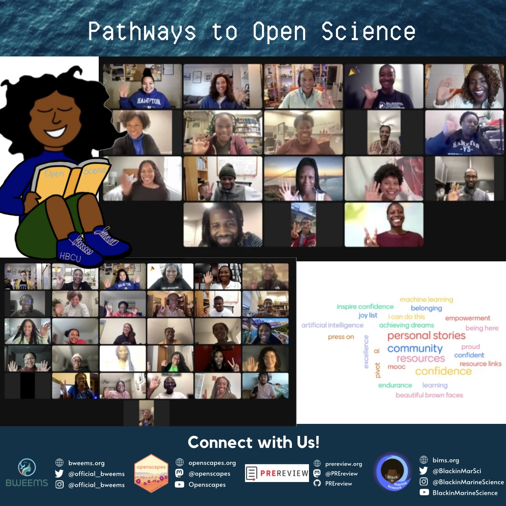
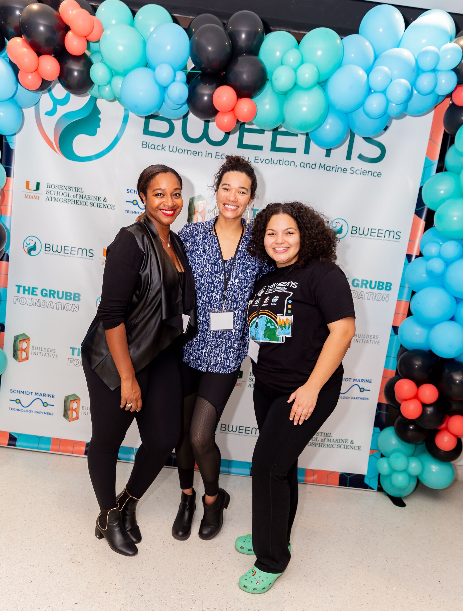

Pathways to Open Science
Welcome
Pathways to Open Science is a remote event series for Black environmental & marine researchers to build community for the future of data intensive science. We empower our community by sharing our stories, learning together, and building skills to expand how data science can improve, accelerate, and support our science. The 2025 series - our 3rd annual - ran weekly from January 23 through February 27. We look forward to 2026 edition!

Program Details
This remote event series convense Black environmental and marine researcher community members with the goal of developing a mindset for Open Data Science: the tools and practices enabling reproducible, transparent, and inclusive practices for data intensive science. If you’re feeling bogged down by folders full of files with names like “analysis_final_v5.xlsx” and/or like empowering others, we welcome you to join us!
This is an ongoing Openscapes collaboration with Black in Marine Science (BIMS), Black Women in Ecology, Evolution, and Marine Science (BWEEMS) and marine science professors from 7 Historically Black Colleges and Universities (HBCUs). The program is led by Ileana Fenwick, with Alex Davis, PhD, and Aneese Williams, MSc.
This 6-part remote event series runs on Thursdays, January 23 - February 27. Event format alternated weekly (all virtual):
- 3 community calls: 1.5 hour calls with facilitated discussion, mini-lectures and community conversations with Black data scientists, data science leaders and students
- January 23, February 6, 20 from 5:00 to 6:30 pm EST
- 3 coworking sessions: 1.5 hour calls structured for folks to bring their own work, their code, or questions, screenshare, and come learn a new skill with us!
- January 30, 13, 27 from 5:00 to 6:30 pm EST
What will Pathways to Open Science look like?
Check out the speakers and resources shared in our 2025, 2024, and 2023 Series.
The event series builds from our work at Openscapes, where we believe open practices can accelerate data-driven solutions and increase diversity, equity, inclusion, and belonging in science. Since 2019 we have mentored >100 research teams, meeting them where they are as they develop enduring habits and community. All Openscapes events abide by our Code of Conduct.
How do participants benefit from this event series?
- Build data science literacy and skills
- Encourage community building and collaboration with other HBCU and Black scientists
- Resume building experience and access to skill development resources after the program is completed
- Networking opportunity
- Welcome to the Openscapes community and Slack workspace as a resource for questions and networking
- Free
Registration
Registration for 2026 will open in December 2025.
If you are a Black marine scientist and/or an HBCU student, we would love to have you! We hope you are able to attend all six events, however, you are welcome to join as many as you are able to. Please invite others to join you! If you are an ally, please help us amplify Black voices; we suggest allies do not sign up for this particular series.
Planning Team

Ileana Fenwick is PI (Principal Investigator) and Lead of the Pathways to Open Science program and a core Openscapes team member. She is an open science advocate and Marine Sciences Ph.D. Student at UNC Chapel Hill. Ileana’s research focuses on evaluating how marine communities respond to climate change and human impacts. Her work uses innovative quantitative methods to improve our ocean management outcomes. In addition to her research, Ileana is also a fierce advocate for HBCU engagement and equity in open science and marine science through her consulting and volunteer work.
Alex Davis, PhD, is co-organizing Pathways to Open Science as a representative of BWEEMS. She is a marine ecologist and conservation scientist in a tenure track position at California State University, Northridge in the Biology Department, and works on The Diversity Project at UCLA. Her research uses a combination of skills with diving, GIS, and spatial ecology to address management strategies for marine conservation in temperate and tropical systems. Alex is on the Board of Directors for BWEEMS.
Aneese Williams, MSc, is co-organizing Pathways to Open Science as a representative of BIMS. She is a graduate of Hampton University where she studied Marine & Environmental Science. Aneese has an M.Sc. in Marine Biology & Fisheries from University of Miami Rosenstiel School of Marine and Atmospheric Science (RSMAS). Currently, Aneese is the Environmental Management Systems Coordinator for the City of West Palm Beach, FL. She manages an Environmental Education Program that allows employees to be more aware of their potential environmental impacts associated with their everyday tasks, highlighting the importance of protecting the environment. Aneese is on the Science Core Heuristics for Open Science Outcomes in Learning (SCHOOL) Open Science Team (OST) with Columbia Climate School and is an NSF BIO-LEAPS Advisory Board Member. She is an expert in problem-solving with data, working to “do things better in less time”.
LaWanda Walker creates the promotional graphics and content for Pathways to Open Science and coordinates promotion with our collaborators. She is a graduate of Hampton University and current graduate student at the University of Chicago with an interest in nonprofit management and public history.
Julie Lowndes, PhD, is Openscapes founder & core team member and provides support for the Pathways to Open Science program.
Stefanie Butland, MSc, is a core Openscapes team member and provides support for the Pathways to Open Science program.
Timeline
- October - November 2024: Planning team coordination
- November - January 2025 planning meetings with liaisons and social media engagement, registration opens
- January 23, 2025 - event series kickoff
- Februrary 27 - event series concludes
- March-April - followup and publish report!
Connect with us!
BWEEMS: Website • Instagram • Twitter
Background Information
To learn more about Openscapes approaches:
- Openscapes recognized at The White House! - Fenwick & Lowndes, October 3, 2024
- A letter to researchers that want to make the world a better place - Antoinette Foster, August 9, 2024
- Shifting institutional culture to develop climate solutions with Open Science (Lowndes et al. 2024, Ecology and Evolution)
- A Journey to Data Science: Tools for Equity and Diversity in STEM - July 28, 2022: Talk by Ileana Fenwick at RStudio Conference (video) (20 minutes)
- Supercharge your research: a 10-week plan for open data science (Lowndes et al. 2019, Nature)
Funding
The 2025 Pathways event series is funded via Openscapes LLC. We are grateful to our previous funders in past years as well. This program was kicked off in 2023, when it was funded in part by the Code for Science & Society Event Fund through the Chan Zuckerberg Initiative. In 2024 it was funded in part by Mozilla Foundation’s Alumni Connection grant that supported our collaboration with PREreview and Dr. Antoinette Foster’s expertise in values-guided career navigation and anti-racist scholarly review. Thank you!
Citation
Please cite Pathways to Open Science through the project’s Zenodo archive using DOI: 10.5281/zenodo.7662699. This DOI represents all versions, and will always resolve to the latest one.
The citation will look something like:
Ileana Fenwick, Alexandra Davis, Aneese Williams, Stefanie Butland & Julia Stewart Lowndes. (2025). Pathways to Open Science (2025.02). Zenodo. https://doi.org/10.5281/zenodo.7662700
Please visit the Pathways DOI link to get the most recent version - the one above is not automatically generated and may be out of date if we release an updated version.